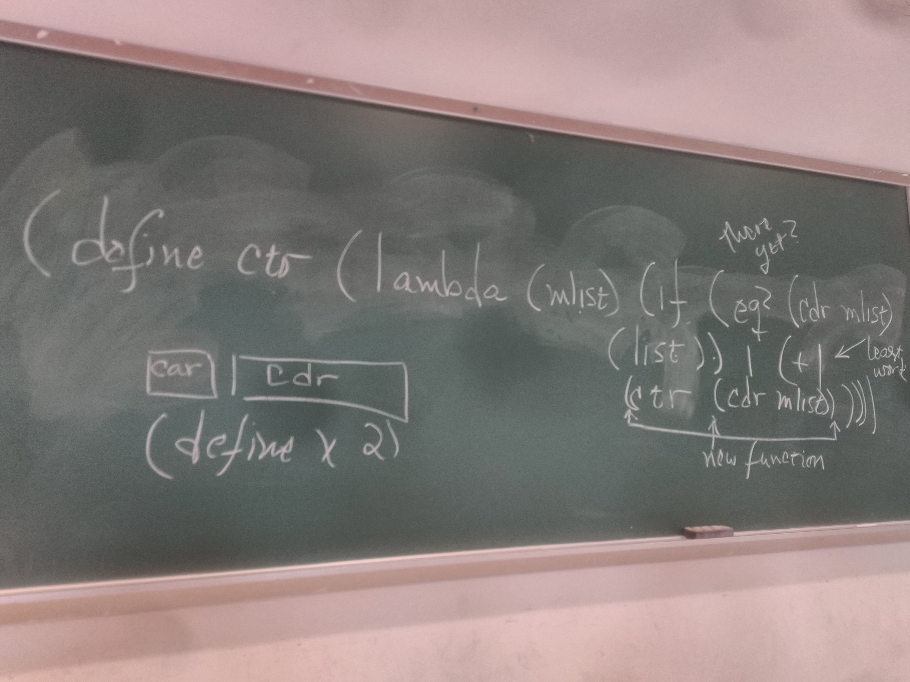
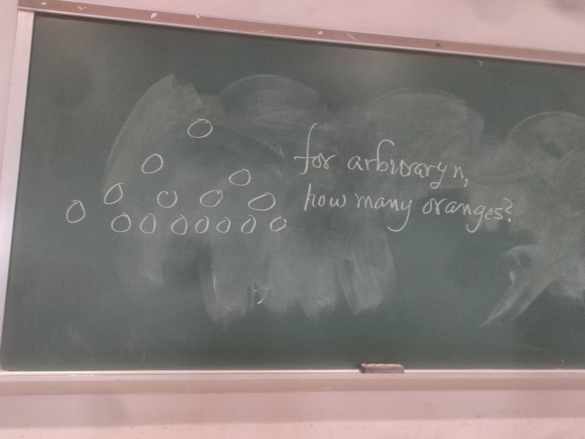

Created Tuesday 04 February 2020
Scheme Notes
A function is...
A set of arguments together with a rule for manipulating those arguments. Even if the rule is the same, it's a different function. In recursion, we keep constructing new functions because we change the arguments. So we change the functions. We don't call ourselves. We don't have a function that calls itself. We have a function that calls a copy of itself with different arguments.
A lamda expression in scheme is a function that takes two args. A list of args and then a rule for manipulating this argument. The lambda expression is named as such because it is drawn from lambda calculus invented in the 1930s. It was invented to study just what it is we mean by functions.
In recurssion, how do we know when we're there yet? When we hit the terminating condition. For a list, we need to check if the tail is empty for iterating over the list. If the tail is empty, then we're done.
(define ctr (lambda (mlist) (if (eq? (cdr mlist) (list)) 1 (+ 1 ctr(cdr mlist)))))
head tail
car cdr
The define function doesn't define things. It names them. It simply says replace this with that.
As a scheme programmer, we don't concern ourselves with real efficiency. We leave that for C or assembly language. For results, we don't pay attention to how long the computing is going to take. The object is just getting it to work. Get the program to work and make it understandable before you worry about speed.
Therac and other Software Disasters
What is the importance of reading the therac report? Only a small number of computer programs can be proved correct. The best we can do is test our software or else we'll get what we got with the therac where people died due to buggy software. Even still, just simply saying it's tested isn't enough. For example, perhaps the program passed all the given test data but what about data that wasn't in the test? What if it crashes for anything outside of the original test? Sure, the program is tested but it doesn't really work!
What we can do is try our best to break it. Come up with good sets of test data. Check the boundary conditions and corner cases. Essentially, we have to test the hell out of it.
A race condition is where the output of the computation depends on the order in which the threads complete. The output may be different. It may not be wrong code. It could be right. But it's a performance issue that messes it up. This is a part of what went wrong with the therac.
Another problem was that the engineers ignored complaints about their software. They believed that the reports of the errors were impossible. Never deny a report. The therac engineers did it over and over again. When a user reports an error, you always follow through and check it even if you end up not being able to recreate the problem. User error is a thing but you should always take their concerns seriously. You can't ignore them no matter how stupid it may seem to be.
The therac engineers failed to comply with the FDA, test, and listen to their users. The therac-25 was a disaster.
Bad software kills people.
Test thoroughly, document, hardware safety isn't more reliable than software (it has a limited lifetime). In fact, software can go on forever where else hardware will fail at some point. Either way, bad software kills. In fact, all software should be written as though lifes depend on it. Who knows, your code could end up inside a piece of medical equipment.

Homework
For HW1, he is adding a third assignment and extending the deadline.
For the third homework, he wants us to pile up oranges. Each row has twice as many as the previous row. For arbitrary n, how many oranges are there in the pyramid total? There is a shortcut he mentions but he's not gonna tell us. Just add em up. Probably just a factorial. HW1 is due next tuesday for all three problems! (that should be the 11th)

He does mention that there is a function called exp that we can use to calculate the number of oranges in each row.
He wants source code, comments, and output by the way.
For doing things command line, he recommends man, script, and cat. Script takes a transcript of whatever comes up on the terminal and print that directly. (double check what script does)
He says he wants all four functions done in one line. I'm curious if he'd be okay with my version. He saw it and said that's exactly what he was looking for! Hurray!
By the way, he prefers the lambda expression over the short form. So do that.